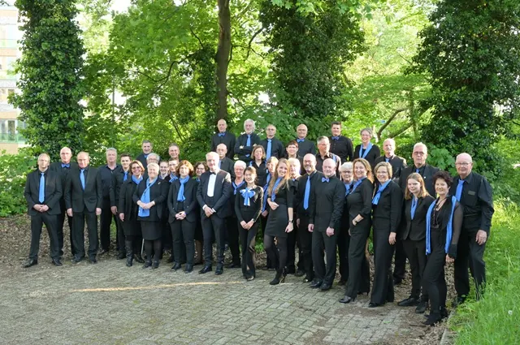

Hatert in Nijmegen
Bijgewerkt op 26 oktober 2026.
Hatert ligt in het zuidwesten van Nijmegen, tegen het Maas-Waalkanaal aan. Het was eeuwenlang een eigen dorp, met kastelen en boerderijen. Nu is het een van de grootste woonwijken van de stad, met een eigen winkelcentrum. Hier lees je wat er te zien is, hoe de wijk is ontstaan en wat er in de buurt te doen is.

Van dorp naar wijk
Er woonden al mensen in Hatert in de Romeinse tijd. In 2025 werd bij het sportpark van SV Hatert zelfs een grafveld uit de vroege middeleeuwen gevonden, uit ongeveer 550 tot 725. De naam komt in oude stukken voor als Hautert (1310) en Hautart (1437), en heeft misschien te maken met de Chattuariërs, een Germaanse stam.
In de middeleeuwen stonden er drie versterkte huizen: Huis Hatert, Duckenburg en Hulsen. Ze speelden een rol bij de belegeringen van Nijmegen. Hatert bleef tot de jaren zestig een eigen dorp. Daarna groeide de stad eroverheen: in de jaren zestig kwamen er meer dan 3.500 woningen bij. Van het oude dorp is weinig over. De neogotische kerk werd in 1967 afgebroken voor de oprit naar de Hatertse brug, maar het kerkhof is nog in gebruik.
De wijk nu
Hatert heeft een rechte stratenstructuur met vooral lage huizen met platte daken, flats aan de randen en groenstroken door de wijk. Het noordelijke deel, de Edelstenenbuurt, bestaat vooral uit koopwoningen; ten zuiden van de Hatertseweg zijn de meeste woningen huurhuizen. Rond Winkelhart Hatert staan nieuwere gebouwen met ronde vormen, waaronder het complex dat de Banaan wordt genoemd. Aan de rand staat de studentenflat Vossenveld.
- Winkelhart Hatert: het winkelcentrum voor de dagelijkse boodschappen.
- Huis Hatert: een boerderij uit de negentiende eeuw op de plek van het oude kasteel, nu een rijksmonument.
- Maas-Waalkanaal: aan de rand van de wijk, met het botenhuis van de Nijmeegse studentenroeivereniging Phocas.
- Sport: voetbalclub SV Hatert, en Harmonie Hatert voor muziekliefhebbers.
In de buurt
- Aan de overkant van het kanaal ligt Dukenburg, met een groot winkelcentrum en een zwembad.
- Ten oosten ligt Brakkenstein, met de campus van de Radboud Universiteit erachter.
- Zin in zwemmen? Bekijk alle zwembaden in Nijmegen.
Veelgestelde vragen
Waar ligt Hatert?
In het zuidwesten van Nijmegen, in het stadsdeel Nijmegen-Zuid. De wijk ligt tussen het Maas-Waalkanaal, het bedrijventerrein Winkelsteeg, de Grootstalselaan en de Malderburchtstraat.
Hoeveel inwoners heeft Hatert?
Op 1 januari 2023 woonden er 10.125 mensen in Hatert, in ruim 5.000 woningen.
Was Hatert vroeger een dorp?
Ja. Hatert was eeuwenlang een eigen dorp, met drie versterkte huizen. In de jaren zestig werd het een woonwijk van Nijmegen.
Welk winkelcentrum is er in Hatert?
Winkelhart Hatert. Voor meer winkels ga je naar het winkelcentrum van Dukenburg, aan de andere kant van het Maas-Waalkanaal.
Wat is Huis Hatert?
Een boerderij uit de negentiende eeuw op de plek van een kasteel uit de veertiende eeuw. Het is een rijksmonument.